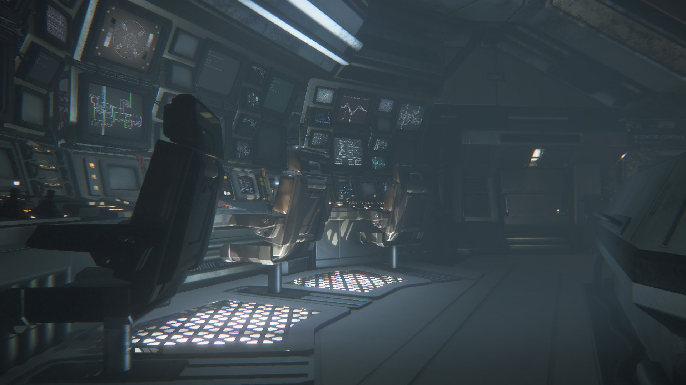

|  |
|
You manage to squeeze yourself into the rust and cobweb infested duct, and you eblow your way past something rough like a bone. It's too dark for you to see, so you keep going. Your knees scrape against shards of metal and then with a gasp, you thrust out the other side. In the next room, you see a line of computing systems across the wall, empty chairs sit as if there were a crew to man them at some point. Lights pour out of the grating across the floor and the air wafts frigid from the opening at the other side of the terminals. One of the monitors flash expecting input, and about 10 feet away from you a single pistol sidearm lays on its side on the ground, one spent casing rolls away from it in the perpetual gusts of air. // further rooms are still under construction // |